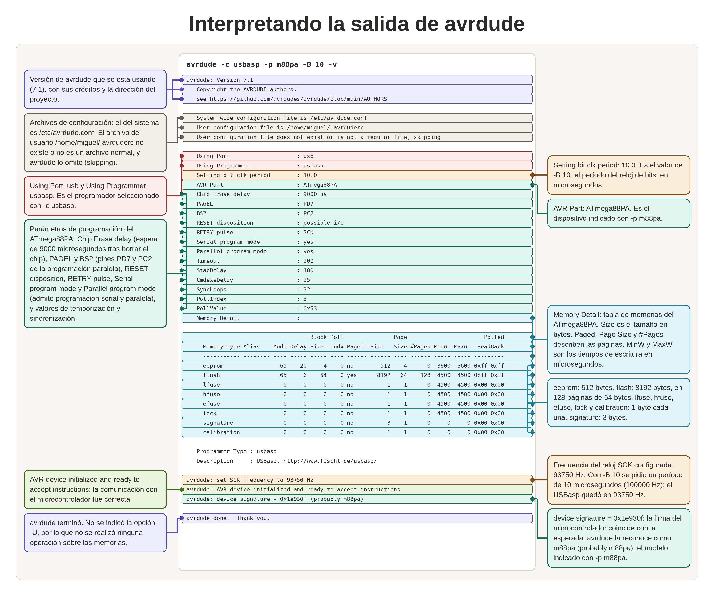

CONEXIÓN DEL PROGRAMADOR ISP USBasp POR BUS SERIAL SPI
INTRODUCCIÓN
La carga del firmaware en el microcontrolador y la depuración la haremos a través del programador ICSP USBasp.
USBasp es un programador de hardware libre y de bajo costo para microcontroladores Atmel AVR. El cerebro es un ATMega88 o un ATMega8. El programador utiliza un controlador USB basado únicamente en firmware; para Linux y Mac Os no se necesita instalar ningún controlador especial del puerto USB.
USBasp se conecta a la estación de trabajo por USB y al microcontrolador por el bus de comunicación serial SPI (interfaz perifericos serial).El software de programación o flasheo AVRDUDE que utilizamos en este sitio, es compatible con USBasp desde la versión 5.2.
1. CONEXIÓN DEL USBasp A LA PC
El ATmega puede programarse mediante ISP (In-System Programming), es decir sin necesidad de retirar el microcontrolador del circuito. La programación o flasheo se realizar desde la estación de trabajo.
Después de conectar el USBasp al puerto USB de la Raspberry Pi 5 podemos comprobar que el sistema lo reconoce con el comando lsusb:
lsusb
Bus 001 Device 001: ID 1d6b:0002 Linux Foundation 2.0 root hub
Bus 001 Device 002: ID 16c0:05dc Van Ooijen Technische Informatica shared ID for use with libusb
Bus 002 Device 001: ID 1d6b:0003 Linux Foundation 3.0 root hub
Bus 003 Device 001: ID 1d6b:0002 Linux Foundation 2.0 root hub
Bus 003 Device 002: ID 1ea7:0066 SHARKOON Technologies GmbH [Mediatrack Edge Mini Keyboard]
Bus 004 Device 001: ID 1d6b:0003 Linux Foundation 3.0 root hub
La salida muestra los 4 puertos USB disponibles en la estación de trabajo, 2 puertos 2.0 y 2 puertos 3.0:
- Bus 001 Device 001: ID 1d6b:0002 Linux Foundation 2.0 root hub
- Bus 002 Device 001: ID 1d6b:0003 Linux Foundation 3.0 root hub
- Bus 003 Device 001: ID 1d6b:0002 Linux Foundation 2.0 root hub
- Bus 004 Device 001: ID 1d6b:0003 Linux Foundation 3.0 root hub
Además muestra que el sistema reconoce 2 dispositivos conectados por USB
La segunda etiqueta corresponde a un teclado inalámbrico y la primera etiqueta corresponde al USBasp.
La identificación del USBasp es 16c0:05dc, que corresponde a Van Ooijen Technische Informatica shared ID for use with libusb. Es muy común observar una etiqueta con el nombre "Van Ooijen Technische Informatica" (o su sigla VOTI) asociada al dispositivo 16c0:05dc. Lejos de tratarse de un error o de un hardware extraño, esto ocurre porque el creador del USBasp utilizó el identificador de fabricante (Vendor ID) sublicenciado gratuitamente por el ingeniero holandés Wouter van Ooijen para apoyar proyectos de código abierto y evitar los costosos pagos de registro ante la USB-IF. De este modo, la base de datos de Linux lee dicho código asignado y reconoce la firma del licenciante, confirmando así que el programador está correctamente reconocido por el sistema operativo y listo para interactuar con herramientas como AVRDUDE.
Podemos comprobar que el USBasp está correctamente conectado y reconocido por el sistema operativo con el siguiente comando, ponemos también a continuación la salida del comando:
~ $ avrdude -c usbasp -p m88pa
avrdude: AVR device initialized and ready to accept instructions
avrdude: device signature = 0x1e940b (probably m168pa)
avrdude done. Thank you.
2. PROGRAMACIÓN ISP, COMUNICACIÓN SPI E INTERFAZ ICSP.
2.1. Interfaz ICSP
La conexión del USBasp con el microcontrolador se realiza a través de un box header DIP (Dual In-line Package/ Encapsulado de Doble Línea) de 10 pines con un paso estándar de 2.54mm, llamado conector ICSP o más comunmente, ISP el cual se conecta a los respectivos pines del microcontrolador. La conexión utiliza principalmente seis señales del bus de comunicación serial SPI: MISO, MOSI, SCK, RESET, VCC y GND. Se utiizan dos tipos de conectores
El ISP USBasp utiliza un cable ribbon de 10 hilos y termina en un conector hembra; por lo tanto el microcontrolador a programar debe tener adosado un conector macho
El modelo de box header, shrouded header (cabecera) o conector macho recibe el nombre estándar de DC3: un conector de tipo caja con cubierta que tiene un espaciado o paso estándar de 2.54 mm entre pines. Su diseño de "caja" incluye una muesca de guía para evitar que el conector hembra se conecte al revés o desalineado.
El conector hembra es de modelo IDC, una pieza electrónica diseñada para engarzarse directamente a un cable plano de cinta (ribbon cable) sin necesidad de pelar ni soldar los hilos conductores..
El conector hembra también tiene una muesca de polarización o relieve en el centro de uno de sus lados. Esta pestaña encaja perfectamente en la ranura de los conectores macho (DC3), asegurando que el cable nunca se conecte al revés. El pitch es de 2.54 mm (0.1 pulgadas) El paso (pitch) es la distancia que hay entre el centro de un pin y el centro del siguiente.
Para facilitar la identificación de los pines y señales PSI, el conector hembra tiene una punta de flecha en el pin 1 (MOSI)
La mayoría de los programadores USBasp utilizan el siguiente orden de señales en el conector ICSP:

2.2. La programación ISP
Para programar un dispositivo de la serie ATmega48A/PA/88A/PA/168A/PA/328/P con el programador USBasp, usamos el método ISP (In System Programming) y la comunicación serial SPI
La programación ISP (In-System Programming / Programación en el Sistema) es un método o técnica general que permite programar un chip sin tener que retirarlo del circuito o de la placa. Microchip (y luego adoptaron otros fabricantes) introdujo el término ICSP (In-Circuit Serial Programming / Programación Serial en Circuito) para llamar a la interfaz física y al conector de pines que hace posible esa programación ISP.
2.3. La comunicación serial síncrona SPI
El bus SPI (del inglés Serial Peripheral Interface) es un estándar de comunicaciones usado principalmente para la transferencia de información entre circuitos integrados. Al ser un bus de comunicación en serie, los datos se transfieren bit a bit a través de un único canal de comunicación. Para ello debemos conectar seis señales entre el programador y el microcontrolador.
| Pin USBasp | Señal ISP | Pin del ATmega | Bit del Puerto del ATmega | Descripción |
|---|---|---|---|---|
| 1 | MOSI | 17 | PB3 | Datos del programador hacia el microcontrolador. |
| 9 | MISO | 18 | PB4 | Datos del microcontrolador hacia el programador. |
| 7 | SCK | 19 | PB5 | Señal de reloj de la programación SPI. |
| 5 | RESET | 1 | PC6/RESET | Coloca el microcontrolador en modo de programación. |
| 2 | VCC | 7 y 20 | - | Alimentación (+5 V o +3.3 V, según el sistema). |
| 4, 6, 8, 10 | GND | 8 y 22 | - | Tierra (masa). |
Debemos recordar:
- ISP es la función (lo que estamos haciendo: programar el chip dentro del sistema).
- SPI es el protocolo de comunicación (cómo se mueven los bits a través de las líneas de cobre).
- ICSP es la interfaz física (conecta el programador con el microcontrolador)
3. CONEXION USBasp con ATmega48A/PA/88A/PA/168A/PA/328/P
Las conexiones con un AVR standalone de la serie ATmega48A/PA/88A/PA/168A/PA/328/P detallan en el gráfico siguiente. La alimentación del circuito y del microcontrolador es proporcionada por VCC procedente del USBasp. Esto es sólo conveniente cuando el circuito representa una carga de poco consumo

En circuitos que requieren mayor consumo al que puede proporcioanr el puerto USB de la Raspberry Pi 5, es necesario alimentar el circuito y el microcontrolador con una fuente externa de potencia conveniente, en cuyo caso es necesario que la fuente externa y el programador USBasp compartan la misma conexión a GND. El diagrama pictórico siguiente ilustra esto:

El esquemático de las conexiones entre un programador USBasp y un AVR de la serie ATmega48A/PA/88A/PA/168A/PA/328/P configurado con circuito mínimo con oscilador externo y alimentado por una fuente externa es el siguiente. Hay que notar que el pin VCC del USBasp queda desconectado y que todos los elementos comparten la misma conexión a GND

4. INFORMACIÓN ÚTIL QUE SE PUEDE OBTENER DEL MICROCONTROLADOR CON USBasp y AVRDUDE
Al conectar el microcontrolador a un USBasp y comunicarte a través de AVRDUDE, se puede extraer un diagnóstico detallado del hardware y del estado de la memoria del chip. No solo sirve para "escribir" código; leer el microcontrolador te permite obtener la siguiente información crítica
4.1. La Firma Digital del Dispositivo (Device Signature)
es un código binario único grabado de fábrica por el fabricante en una sección de memoria de solo lectura del chip. Conocer y utilizar este identificador es crucial por las siguientes razones prácticas:
- Identificación del modelo exacto: Los entornos de desarrollo leen estos bytes antes de subir un programa. Si la firma detectada no coincide con el modelo de chip seleccionado en el proyecto, el sistema detiene la carga, evitando daños en el firmware o que la configuración incorrecta de los pines. Si compraste un chip etiquetado como ATmega328P pero tienes una copia falsificada o una variante distinta (como el ATmega328 sin la 'P'), la firma digital te lo dirá de inmediato
- Seguridad y Criptografía: Sirve como base ("semilla") para generar claves criptográficas únicas por dispositivo. Esto permite que el microcontrolador se comunique de forma segura en redes (como el Internet de las Cosas - IoT), garantizando que los datos provienen de ese chip específico y no de un clon.
- Protección contra la piratería (Anti-clonación): Puedes programar tu software para que verifique la firma digital del chip al arrancar. Si alguien copia tu código y lo graba en un microcontrolador clonado o pirata, el programa detectará una firma diferente y se bloqueará automáticamente.
- Gestión y trazabilidad en producciónEn la fabricación en masa, permite registrar de manera automatizada qué chip exacto se instaló en cada producto final. Esto facilita el rastreo de fallos en el control de calidad.
4.1.1 Comando abreviado para leer la firma digital
~ $ avrdude -c usbasp -p m88pa
avrdude: AVR device initialized and ready to accept instructions
avrdude: device signature = 0x1e930f (probably m88pa)
avrdude done. Thank you.
- avrdude: AVR device initialized and ready to accept instructions
- El programador USBasp logró enviar la señal de "atención" (secuencia de inicio por el pin RESET) y el microcontrolador ATmega88PA respondió correctamente a través de las líneas de comunicación SPI (
MOSI,MISOySCK).
- avrdude: device signature = 0x1e930f (probably m88pa)
0x1e930f : Son los 3 bytes exactos que AVRDUDE leyó desde la memoria interna del chip físico.- (probably m88pa): El software buscó en su archivo de configuración (avrdude.conf) a qué chip le pertenece el código 1E 93 0F. Encontró que coincide perfectamente con el ATmega88PA. Te dice "probablemente" (probably) por pura precaución técnica de los desarrolladores, pero la coincidencia es exacta.
A veces el USBasp intenta comunicarse a una velocidad superior al chip a programar surgiendo errores de lectura. Si el microcontrolador es nuevo de fábrica, viene configurado con su oscilador interno a 1 MHz.
Para estabilizar la comunicación y evitar que la escritura de archivos corrompa la lectura, se puede usar el parámetro -B. Fuerza a AVRDUDE a usar un periodo de reloj más lento usando el parámetro -B, un valor de 4 a 10 microsegundos suele ser ideal para chips lentos:
4.1.2.Comando para leer la firma digital en forma detallada
Una manera mas detallada de leer las caracteristicas del chip es utilizando el parámetro -v, de verbose ()
~ $ avrdude -c usbasp -p m88pa -B 10 -v
avrdude: Version 7.1
Copyright the AVRDUDE authors;
see https://github.com/avrdudes/avrdude/blob/main/AUTHORS
System wide configuration file is /etc/avrdude.conf
User configuration file is /home/miguel/.avrduderc
User configuration file does not exist or is not a regular file, skipping
Using Port : usb
Using Programmer : usbasp
Setting bit clk period : 10.0
AVR Part : ATmega88PA
Chip Erase delay : 9000 us
PAGEL : PD7
BS2 : PC2
RESET disposition : possible i/o
RETRY pulse : SCK
Serial program mode : yes
Parallel program mode : yes
Timeout : 200
StabDelay : 100
CmdexeDelay : 25
SyncLoops : 32
PollIndex : 3
PollValue : 0x53
Memory Detail :
Block Poll Page Polled
Memory Type Alias Mode Delay Size Indx Paged Size Size #Pages MinW MaxW ReadBack
----------- -------- ---- ----- ----- ---- ------ ------ ---- ------ ----- ----- ---------
eeprom 65 20 4 0 no 512 4 0 3600 3600 0xff 0xff
flash 65 6 64 0 yes 8192 64 128 4500 4500 0xff 0xff
lfuse 0 0 0 0 no 1 1 0 4500 4500 0x00 0x00
hfuse 0 0 0 0 no 1 1 0 4500 4500 0x00 0x00
efuse 0 0 0 0 no 1 1 0 4500 4500 0x00 0x00
lock 0 0 0 0 no 1 1 0 4500 4500 0x00 0x00
signature 0 0 0 0 no 3 1 0 0 0 0x00 0x00
calibration 0 0 0 0 no 1 1 0 0 0 0x00 0x00
Programmer Type : usbasp
Description : USBasp, http://www.fischl.de/usbasp/
avrdude: set SCK frequency to 93750 Hz
avrdude: AVR device initialized and ready to accept instructions
avrdude: device signature = 0x1e930f (probably m88pa)
avrdude done. Thank you.
A continuación lo que significa cada bloque de la salida del comando:
1. Datos del software y archivos de configuración
avrdude: Version 7.1
Copyright the AVRDUDE authors;
see https://github.com/avrdudes/avrdude/blob/main/AUTHORS
System wide configuration file is /etc/avrdude.conf
User configuration file is /home/miguel/.avrduderc
User configuration file does not exist or is not a regular file, skipping
- Indica que se está ejecutando la versión 7.1 del software AVRDUDE.
- Confirma la carga del archivo maestro
/etc/avrdude.conf, el cual funciona como el catálogo de referencia global donde el programa almacena los mapas de memoria y las firmas digitales de los microcontroladores soportados.
- Muestra la búsqueda de configuraciones personalizadas en el archivo
.avrduderc dentro del directorio del usuario, procediendo a omitirlo al constatar que este no existe en el sistema.
2. Parámetros de conexión y del chip objetivo
Using Port : usb
Using Programmer : usbasp
Setting bit clk period : 10.0
AVR Part : ATmega88PA
- Port / Programmer: Ratifica el uso de un programador por hardware USBasp conectado a través de un puerto USB.
- Setting bit clk period : 10.0: Establece un periodo de reloj más amplio, lo que incrementa el tiempo de espera entre la transferencia de cada bit y otorga el margen necesario para la correcta respuesta del integrado.
- AVR Part : ATmega88PA: Valida que el software ha configurado los parámetros específicos de destino para un microcontrolador ATmega88PA.
3. La tabla "Memory Detail" (El mapa del chip)
avrdude: Version 7.1
Copyright the AVRDUDE authors;
see https://github.com/avrdudes/avrdude/blob/main/AUTHORS
System wide configuration file is /etc/avrdude.conf
User configuration file is /home/miguel/.avrduderc
User configuration file does not exist or is not a regular file, skipping
/etc/avrdude.conf, el cual funciona como el catálogo de referencia global donde el programa almacena los mapas de memoria y las firmas digitales de los microcontroladores soportados..avrduderc dentro del directorio del usuario, procediendo a omitirlo al constatar que este no existe en el sistema.
Using Port : usb
Using Programmer : usbasp
Setting bit clk period : 10.0
AVR Part : ATmega88PA
Esta tabla describe la radiografía y la estructura interna de la memoria del ATmega88PA, definiendo los parámetros de lectura y escritura del dispositivo:
- flash (8192 bytes / 8 KB): Representa el espacio total disponible para el almacenamiento del programa principal, detallando que la escritura se segmenta en páginas de 64 bytes.
- eeprom (512 bytes): Identifica el bloque de memoria no volátil destinado a preservar variables permanentes tras la pérdida de alimentación del circuito.
- lfuse, hfuse, efuse (Fusibles): Corresponde a los tres bytes dedicados a la configuración física del hardware, determinando aspectos como la fuente de reloj o los sistemas de protección contra caídas de tensión.
- signature (3 bytes): Especifica el sector de solo lectura asignado al almacenamiento de la firma digital de identidad del microcontrolador.
4. El resultado final del enlace técnico
avrdude: set SCK frequency to 93750 Hz
avrdude: AVR device initialized and ready to accept instructions
avrdude: device signature = 0x1e930f (probably m88pa)
- Señala que, al aplicar un periodo de clock de 10.0, el hardware adaptó la frecuencia de comunicación SPI a 93750 Hz, un valor seguro para procesadores que operan con bajas frecuencia.
- device signature = 0x1e930f: Confirma la lectura exitosa y sin interferencias de la firma digital grabada en el chip, verificando que coincide plenamente con las especificaciones del ATmega88PA seleccionado.

4.2. Configuración del Reloj y Hardware (Fuses / Fusibles)
Los términos lfuse (Low Fuse), hfuse (High Fuse) y efuse (Extended Fuse) corresponden a los tres bytes de fusibles de configuración de hardware en los microcontroladores AVR.
Con estos bytes podemos configurar:
- Frecuencia y Oscilador: Si está usando el oscilador interno (8 MHz o 128 kHz) o un cristal de cuarzo externo.
- Divisor de Reloj (
CKDIV8)Si la velocidad real está dividida entre 8. - Reset alternativo: Si el pin de RESET está deshabilitado para usarse como una entrada/salida digital más.
- Detector de caída de voltaje (BOD - Brown-out Detection)El nivel exacto de voltaje (ej. 2.7V o 4.3V) en el que el chip se auto-reiniciará para prevenir que el código se corrompa si la batería se está agotando.
4.3 Lectura de los fuses
Para diagnosticar el estado del chip y posteriormente configurarlo, conviene saber cómo está configurado. Para ello leemos los fuses
Los fuses son bits de configuración que se almacenan dentro del microcontrolador y que conservan su valor aunque desconectes la alimentación.
Mediante el siguiente comando solicitaremos la lectura de los tres bytes de fuses: lfuse, hfuse y efuse. Los argumentos utilizados son: r que significa leer; - indica que el resultado se envía a la salida estándar; h solicita que se muestre en hexadecimal.
~ $ avrdude -c usbasp -p m88p -U lfuse:r:-:h -U hfuse:r:-:h -U efuse:r:-:h
avrdude: AVR device initialized and ready to accept instructions
avrdude: device signature = 0x1e930f (probably m88p)
avrdude: reading lfuse memory ...
avrdude: writing output file
0xe2
avrdude: reading hfuse memory ...
avrdude: writing output file
0xd5
avrdude: reading efuse memory ...
avrdude: writing output file
0xff
avrdude done. Thank you.
A continuación, se presenta la explicación técnica del comando de lectura y la salida obtenida en la consola de comandos,
4.3.1. Interpretación del Comando de Lectura
El comando ejecutado instruye a AVRDUDE a conectarse mediante el programador USBasp para realizar tres operaciones consecutivas de lectura (:r). Los parámetros utilizados configuran el sistema para redirigir los datos directamente a la salida estándar de la consola (:-) y mostrarlos codificados en formato hexadecimal (:h), evitando la creación de archivos físicos en el disco.
4.3.2. Inicialización y Sincronización con el Hardware
El programador establece exitosamente el enlace de comunicación SPI con el integrado. Tras el reinicio físico, se extrae la firma digital del dispositivo (0x1e930f), validando que corresponde de forma exacta al microcontrolador seleccionado y garantizando que el canal de datos es estable para proceder con la inspección de los registros de configuración.
4.3.3. Análisis del Fusible Bajo (lfuse = 0xE2)
El sistema reporta un valor hexadecimal de 0xE2 para el byte bajo de configuración. Al desglosar este valor binario, se determina que el microcontrolador está configurado para operar con su oscilador interno calibrado de 8 MHz como fuente de reloj principal y con el divisor interno desactivado (Clock Divide by 8 deshabilitado), permitiendo que el chip trabaje a su máxima velocidad interna de fábrica.
4.3.4. Análisis del Fusible Alto (hfuse = 0xD5)
El registro de funciones altas devuelve el valor hexadecimal 0xD5. Esta configuración específica indica que el pin físico de Reset se mantiene activo para futuras reprogramaciones, el circuito SPI está habilitado y la casilla EESAVE se encuentra activa, lo que protege el contenido de la memoria EEPROM para que no sea destruido cuando se reescriba el firmware principal.
4.3.5. Análisis del Fusible Extendido (efuse = 0xFF)
El byte extendido arroja un valor hexadecimal de 0xFF. En la arquitectura del ATmega88P, los bits superiores de este registro no se utilizan (permanecen en 1), y el valor obtenido confirma que el circuito detector de caídas de tensión (Brown-out Detector o BOD) se encuentra completamente deshabilitado, disminuyendo al mínimo el consumo de corriente en modo de reposo.
4.4. Escritura de los fuses
Por ejemplo, podemos configurar el microcontrolador para que:
- Utilice el oscilador interno.
- Utilice un cristal externo.
- Utilice una señal de reloj externa procedente de otro circuito.
Estas opciones no se seleccionan escribiendo una instrucción normal de C en un programa. Se configuran mediante un procedimiento de programación, por ejemplo, con tu USBasp y AVRDUDE y desde la línea de comandos, escribiendo directamente en el microcontrolador.
A modo de ilustración, el siguiente comando ejecuta una acción directa de modificación sobre la configuración física del integrado:
avrdude -c usbasp -p m88p -U lfuse:w:0xe2:m4.4.1. Propósito General del Comando
Este comando se utiliza para escribir o modificar físicamente la configuración del Fusible Bajo (lfuse) en el microcontrolador. A diferencia de las instrucciones orientadas a la lectura, esta línea altera permanentemente los parámetros de hardware del chip mediante una operación de escritura (:w).
4.4.2. Desglose de los Parámetros Utilizados
La directiva principal se concentra en el argumento -U lfuse:w:0xe2:m, el cual se divide internamente de la siguiente manera:
- lfuse: Especifica que el objetivo de la operación es el byte del Fusible Bajo (Low Fuse).
- w: Indica que se va a ejecutar una acción de escritura (write) en dicha memoria.
- 0xe2: Determina el valor hexadecimal exacto que se va a grabar en el registro.
- m: Establece el modo "inmediato" (immediate mode), indicando al software que el valor proporcionado es un dato numérico directo y no un archivo de texto en el disco.
4.4.3. Efectos Físicos en el Microcontrolador
Al aplicar el valor 0xE2 en el microcontrolador, el hardware reconfigura de inmediato sus propiedades fundamentales al arrancar:
- Selección de Reloj: Configura el chip para que funcione utilizando su oscilador interno calibrado de 8 MHz, prescindiendo de la necesidad de conectar un cristal de cuarzo externo en los pines físicos.
- Desactivación del Divisor (CKDIV8): Deshabilita la división interna por ocho del reloj de fábrica. Esto hace que el procesador trabaje directamente a los 8 MHz completos en lugar de los 1 MHz con los que viene configurado por defecto al salir de la línea de producción.
4.5. Estado de Protección y Seguridad (Lock Bits)
Los Lock bits determinan los permisos de lectura y escritura de la memoria.
Dice si el microcontrolador está protegido contra clonación. Si recuperas un chip de un aparato comercial, leer este byte te indicará si puedes extraer el firmware que tiene dentro o si el fabricante bloqueó la lectura para proteger su propiedad intelectual.
4.6 Volcado Completo del Firmware (Flash y EEPROM)
Puedes descargar todo lo que reside en el almacenamiento del chip directo a tu computadora.
- Memoria Flash: Puedes extraer el software ejecutable completo compilado (en un archivo
.hex) para duplicarlo en otros chips o hacer una copia de seguridad. - Memoria EEPROM: Puedes leer los datos guardados por el usuario a largo plazo (configuraciones, calibraciones de sensores, contraseñas de red guardadas, etc.).
Comando para respaldar la Flash:
avrdude -c usbasp -p m328p -U flash:r:respaldo.hex:i4.7. Byte de Calibración del Oscilador Interno (Calibration Byte)
El oscilador interno de fábrica (RC) no es 100% preciso y varía con la temperatura.
- Para qué sirve: Al leer este byte (
calibration), obtienes el valor exacto que la fábrica calculó a 25 °C para calibrar la frecuencia. Tu código en C puede leer este valor al iniciar y cargar el registroOSCCALpara corregir la velocidad del reloj y hacer que protocolos sensibles como la comunicación UART funcionen a la perfección sin desfasarse.